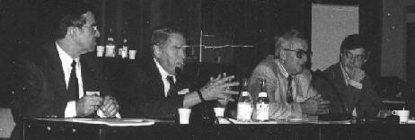
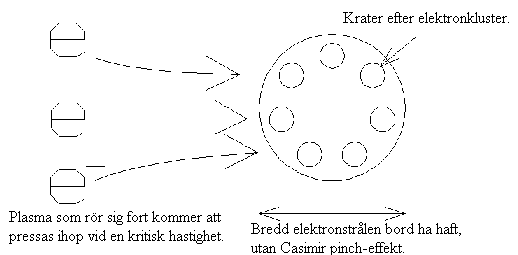
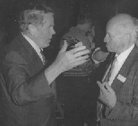
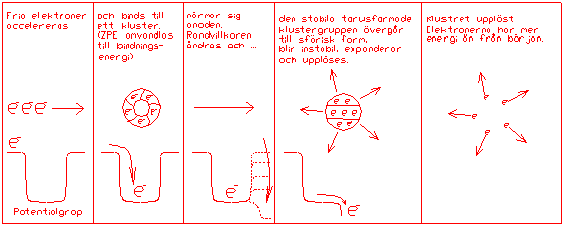
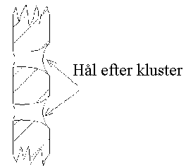
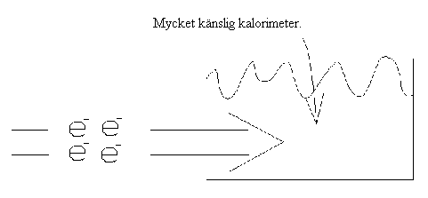

Intryck från Frienergi-symposiet
av Lars Johansson
Inledning
Så, i början av September, var det dags för årets frienergihändelse i Sverige 1994. SAFVE (Scandinavian Association for Vacuum Field Energy) anordnade ett symposium i Stockholm med titeln 'Den nya energin'. Omkring 100 personer slöt upp. Huvudgäst var Dr. Hal Puthoff från Center for advanced studies i Texas. Han har bl.a. publicerat artiklar i den prestigefyllda tidskriften the Physical Review.Vad kom då fram på symposiet - mer än de vanliga omtuggningarna, och (det viktiga) nätverkandet över kaffepauserna? Det kan nog sammanfattas med orden 1-Watt-challenge, hardware och Hal Puthoff.

I diskussionspanelen, Från vänster: Josef Gruber, Arthur Alexander, Jens Tellefsen och Hal Puthoff.
Hardware och utmaningar
Dr. Alexander redovisade från de amerikanska frienergi och kall fusions-symposierna i våras. Där fördes fram iden om 'the 1-Watt-challenge', dvs. att ta fram en apparat som kontinuerligt och autonomt producerar 1 Watt i någon form av energi. Det kan tyckas litet , men iden är att undvika hela problematiken med huruvida man mätt rätt på tillförd och uttagen (konventionell) effekt, och därmed visa på en odiskutabel energiutvinning (av någon okänd energikälla).En annan punkt som diskuterades är relaterad till det ovanstående, nämligen kravet på att apparater ( hardware) visa fram för oberoende testning. Om inte vi själva inom frienergi-forskningen börjar ställa krav på de uppfinnare som hävdar ett energiöverskott att visa upp sina konstruktioner, så att vi kan mäta på dem, så kommer vi inte att kunna ta oss ur den snårskog av rykten och påståenden som nu omger området.
Jag tror att dessa två punkter är långt viktigare än de presentationer och diskussioner som också gjordes på de amerikanska symposierna. Det behövs en öppen, men kritisk, granskning av alla uppfinningar och fenomen. Inget patentverk kommer fördomsfritt att testa påståenden om en apparat som utvinner energi från någon okänd energikälla. Därför är det upp till oss som sysslar med området, att genom internationellt nätverkande skapa forum, där påstådda effekter kan testas utan förutfattade meningar. Det finns en klar vilja från amerikanskt håll till internationellt nätverkande, och till att ta fram standardiserad testmetodik, så att det inte begås några dundertabbar vid bestämning av verkningsgrad etc..
Hal Puthoff
Så till symposiets huvudnummer - Hal Puthoffs föredrag. Han började med att diskutera nollpunktsstrålningens roll inom den moderna fysiken, en strålning som finns även vid absoluta nollpunkten, då all temperaturstrålning har upphört. Den används för att förklara bl.a.:Lamb-shift: att atomspektrumlinjerna har en viss bredd då man mäter dem i praktiken
Spontan emission: att utsändandet av fotoner från en atom inte alls är spontant, utan påverkas om atomen stängs in i en kavitet, som bara tillåter vissa våglängder att existera.
Casimir-effekten: att två plattor som hålls nära varandra attraheras p.g.a. att strålningstrycket är större på utsidorna än insidorna, då bara vissa våglängder (jämna multiplar) kan existera mellan de ledande plattorna.
Robert L Forward diskuterade under mitten av 80-talet möjligheten att använda Casimir-effekten till att utvinna energi ur nollpunktsstrålningen, men konstaterade att man bara skulle kunna använda plattorna en gång (eftersom det sedan skulle gå åt lika mycket energi att skilja dem åt igen).
Hal Puthoff menar sig ha löst problemet genom att använda en variant av Casimir-effekten 'The Casimir pinch effect' på laddningscluster (små samlingar av laddade partiklar). Effekten har detekterats vid utvecklandet av partikelacceleratorer i samband med SDI (USA's Star Wars-program). Man fann där att elektroner från en elektronkanon inte fördelade sig jämnt över den yta de träffade, utan i grupper (se bild 1).

Bild nr 1, visar 'The Casimir pinch effect'.
Hal Puthoffs princip för energiutvinning är följande: Man låter elektroner accelereras till en hög hastighet. Strålen trycks då ihop något p.g.a. elektromagnetiska krafter, men dessa krafter balanseras av den elektrostatiska repulsionen mellan elektronerna. Då elektronerna kommit tillräckligt nära varandra börjar plötsligt Casimir-pinch-kraften, som hittills varit försumbar, att dominera. Strålen kollapsar då till ett elektroncluster, ungefär som då den starka kraften övervinner den elektrostatiska repulsionen vid vanlig kärnfusion. Vid denna process ökar elektronernas energi eftersom laddning koncentreras. Elektronerna lämnar acceleratorn och träffar anoden. Här upplöses laddningsclustret och energin frigörs som rörelseenergi hos elektronerna.

Efter föredragen uppstod livliga diskussioner kring kaffekopparna. Här Dr. Arthur Alexander i samspråk med en av deltagarna.
Hur går det ihop men med stabilitet och energikonservation, undrar den vakne läsaren. Det undrade jag också och frågade därför Puthoff om detta i pausen. Hans svar var att vid anoden ändras randvillkoren för elektronclustret och nollpunktsfältet bidrar även här med energi. D.v.s. vi har efter försöket elektroner med mer energi än de hade från början, och ett nollpunktsfält med motsvarande mindre energi (se bild 2 som förhoppningsvis illustrerar förloppet klarare).

Bild nr 2, visar händelseförloppet vid 'The Casimir pinch effect'.
Puthoff har ännu inte publicerat de uträkningar som ligger till grund för ovanstående resonemang, men han menar att det i princip är problemfritt att härleda det från Casimir-pinch-effekten och QED (kvantelektrodynamik):
Experimenten
Så till de experiment han utfört. Han lät en stråle med laddningscluster träffa ett keramiskt material. Delar av materialet förgasades, och det uppstod smala hål genom materialet.
Energin som åtgått för att förånga materialet beräknades till ca 10 gånger den energi som tillförts.
I ett annat experiment skickades clusterstrålen in i en kalorimeter, och temperaturändringen uppmättes. Även här uppstod ett energiöverskott på en faktor 10.

Experimentet kräver mycket noggrann kalibrering, då det är mycket små energimängder det rör sig om. Men i princip skulle det vara möjligt att skala upp försöken. Puthoff arbetar på detta och han har gjort upp med NSA (National bureau of Standards) att de ska få testa tekniken innan han går ut med något mer offentligt, för att undvika en kontrovers liknade den som uppstått inom 'kall fusions'-forskningen. Vi får se vad som händer. Låt oss under tiden undersöka de fenomen och uppfinningar som verkar lovande.